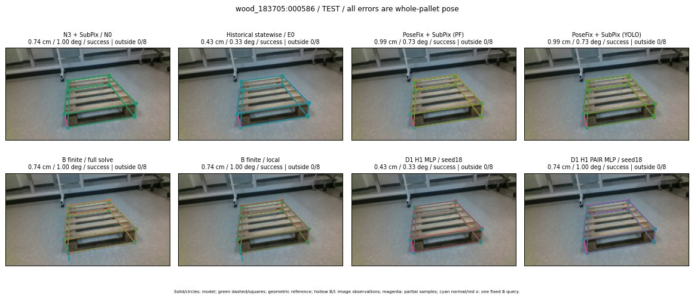

Whole-pallet pose errors; reference is a fixed geometric annotation, not certified physical GT.

Scores are uncalibrated logits. N0 retention is a numerical pose alias; it differs from H0 none or B fallback. B/I and profiles in baseline/B panels are original observations; L panels use new D1 observations. Only one deterministic supported B query is shown in a thumbnail; full support counts are below. Grey privacy rectangles edit the display copy only and are unrelated to O states; all observations were measured on original pixels. Thumbnails use JPEG quality85; detailed scientific panels are PNG.
| Method | Whole pose / cm, deg | Actual source | Selected ID | Score | Archived candidates | Eligible | N0 retained | H0 none | Fallback | Finite profiles |
|---|---|---|---|---|---|---|---|---|---|---|
| Raw YOLO + F | 0.61 cm / 1.36 deg / success | OTHER | None | N/A | N/A | N/A | False | N/A | None | N/A |
| N3 + SubPix / N0 | 0.74 cm / 1.00 deg / success | N0 | None | N/A | N/A | N/A | True | N/A | None | N/A |
| Historical statewise / E0 | 0.43 cm / 0.33 deg / success | E0_REGENERATED | None | N/A | N/A | N/A | False | N/A | False | N/A |
| PoseFix raw | 0.85 cm / 0.55 deg / success | OTHER | None | N/A | N/A | N/A | False | N/A | None | N/A |
| PoseFix + SubPix (PF) | 0.99 cm / 0.73 deg / success | OTHER | None | N/A | N/A | N/A | False | N/A | False | historical support records 9; finite audit N/A |
| PoseFix + SubPix (YOLO) | 0.99 cm / 0.73 deg / success | OTHER | None | N/A | N/A | N/A | False | N/A | False | historical support records 9; finite audit N/A |
| Historical L, seed18 | 0.43 cm / 0.33 deg / success | OTHER | NEW/A/ORIGINAL_WD/h2/G10/SWAPPED_WD/sample/1/PROPOSED_NATIVE_YAW_2 | N/A | 31 | 30 | False | False | False | N/A |
| Historical B fixed bank | 0.43 cm / 0.33 deg / success | E0_REGENERATED | G13/ORIGINAL_WD/sample/0 | N/A | N/A | N/A | False | N/A | False | N/A |
| Historical B full | 1.90 cm / 3.38 deg / success | OTHER | NEW/B/ORIGINAL_WD/h0/G13/ORIGINAL_WD/sample/0/PROPOSED_NATIVE_YAW_0 | N/A | N/A | N/A | False | N/A | False | N/A |
| Historical edge full | 0.43 cm / 0.31 deg / success | OTHER | G10/ORIGINAL_WD/sample/0 | N/A | N/A | N/A | False | N/A | False | N/A |
| Historical AB full | 1.90 cm / 3.38 deg / success | OTHER | NEW/AB/ORIGINAL_WD/h0/G13/ORIGINAL_WD/sample/0/PROPOSED_NATIVE_YAW_0 | N/A | N/A | N/A | False | N/A | False | N/A |
| B finite / fixed bank | 0.74 cm / 1.00 deg / success | N0 | N0 | N/A | N/A | N/A | True | N/A | False | 32/32 |
| B finite / full solve | 0.74 cm / 1.00 deg / success | N0 | N0 | N/A | N/A | N/A | True | N/A | False | 32/32 |
| B finite / local | 0.74 cm / 1.00 deg / success | N0 | N0 | N/A | N/A | N/A | True | N/A | True | N/A |
| Edge finite / full solve | 2.19 cm / 2.68 deg / success | OTHER | NEW_FINITE/edge/ORIGINAL_WD/h0/G13/ORIGINAL_WD/sample/0/PROPOSED_NATIVE_YAW_0 | N/A | N/A | N/A | False | N/A | False | 32/32 |
| D0 H0 MLP / seed18 | 0.43 cm / 0.33 deg / success | E0_REGENERATED | E0_REGENERATED | 4.062776565551758 | 11 | 10 | False | False | False | N/A |
| D0 H0 MLP / seed19 | 0.43 cm / 0.33 deg / success | E0_REGENERATED | E0_REGENERATED | 4.168457508087158 | 11 | 10 | False | False | False | N/A |
| D0 H0 MLP / seed20 | 0.43 cm / 0.31 deg / success | OTHER | G10/ORIGINAL_WD/selected | 1.476013422012329 | 11 | 10 | False | False | False | N/A |
| D0 H1 MLP / seed18 | 0.43 cm / 0.33 deg / success | E0_REGENERATED | E0_REGENERATED | 0.5492392778396606 | 11 | 10 | False | False | False | N/A |
| D0 H1 MLP / seed19 | 0.43 cm / 0.33 deg / success | E0_REGENERATED | E0_REGENERATED | -0.45387953519821167 | 11 | 10 | False | False | False | N/A |
| D0 H1 MLP / seed20 | 0.43 cm / 0.33 deg / success | E0_REGENERATED | E0_REGENERATED | -0.6006017327308655 | 11 | 10 | False | False | False | N/A |
| D1 H0 MLP / seed18 | 0.43 cm / 0.33 deg / success | E0_REGENERATED | E0_REGENERATED | 6.938498020172119 | 11 | 10 | False | False | False | N/A |
| D1 H0 MLP / seed19 | 0.43 cm / 0.33 deg / success | E0_REGENERATED | E0_REGENERATED | 7.0967326164245605 | 11 | 10 | False | False | False | N/A |
| D1 H0 MLP / seed20 | 0.43 cm / 0.33 deg / success | E0_REGENERATED | E0_REGENERATED | 6.325953483581543 | 11 | 10 | False | False | False | N/A |
| D1 H1 MLP / seed18 | 0.43 cm / 0.33 deg / success | E0_REGENERATED | E0_REGENERATED | 1.224509358406067 | 11 | 10 | False | False | False | N/A |
| D1 H1 MLP / seed19 | 0.43 cm / 0.31 deg / success | OTHER | G10/ORIGINAL_WD/selected | 1.079471468925476 | 11 | 10 | False | False | False | N/A |
| D1 H1 MLP / seed20 | 0.43 cm / 0.33 deg / success | E0_REGENERATED | E0_REGENERATED | 1.5806227922439575 | 11 | 10 | False | False | False | N/A |
| D1 H1 ROLE AFFINE / seed18 | 0.74 cm / 1.00 deg / success | N0 | N0 | 1.6683270931243896 | 11 | 10 | True | False | False | N/A |
| D1 H1 ROLE AFFINE / seed19 | 0.74 cm / 1.00 deg / success | N0 | N0 | 1.105455994606018 | 11 | 10 | True | False | False | N/A |
| D1 H1 ROLE AFFINE / seed20 | 0.74 cm / 1.00 deg / success | N0 | N0 | 1.7255457639694214 | 11 | 10 | True | False | False | N/A |
| D1 H1 PAIR MLP / seed18 | 0.74 cm / 1.00 deg / success | N0 | N0 | 0.3648742735385895 | 11 | 2 | True | False | False | N/A |
| D1 H1 PAIR MLP / seed19 | 0.74 cm / 1.00 deg / success | N0 | N0 | 1.0855847597122192 | 11 | 2 | True | False | False | N/A |
| D1 H1 PAIR MLP / seed20 | 0.74 cm / 1.00 deg / success | N0 | N0 | 1.2507010698318481 | 11 | 2 | True | False | False | N/A |
| D1 H1 PAIR ROLE AFFINE / seed18 | 0.43 cm / 0.33 deg / success | E0_REGENERATED | E0_REGENERATED | 1.1185081005096436 | 11 | 2 | False | False | False | N/A |
| D1 H1 PAIR ROLE AFFINE / seed19 | 0.43 cm / 0.33 deg / success | E0_REGENERATED | E0_REGENERATED | 1.2257341146469116 | 11 | 2 | False | False | False | N/A |
| D1 H1 PAIR ROLE AFFINE / seed20 | 0.43 cm / 0.33 deg / success | E0_REGENERATED | E0_REGENERATED | 1.0517349243164062 | 11 | 2 | False | False | False | N/A |
| Regenerated common E0 | 0.43 cm / 0.33 deg / success | E0_REGENERATED | E0_REGENERATED | N/A | N/A | N/A | False | N/A | False | N/A |